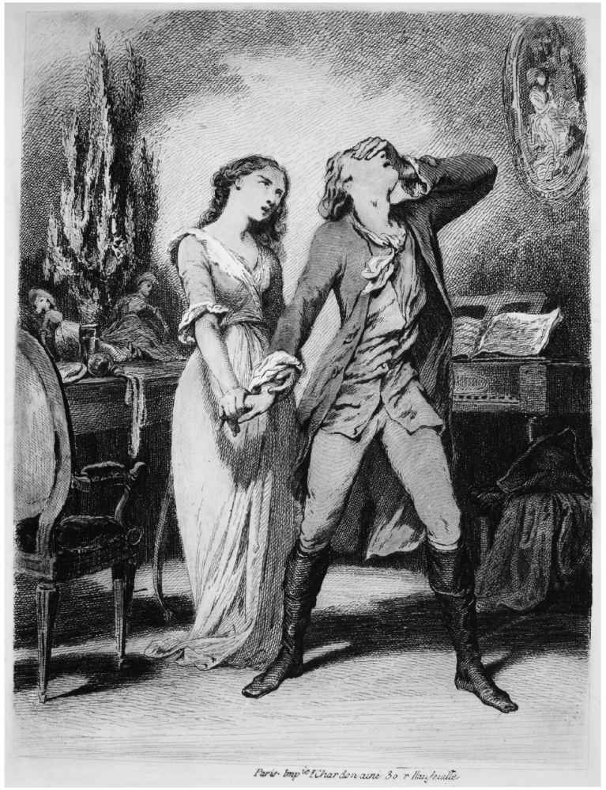
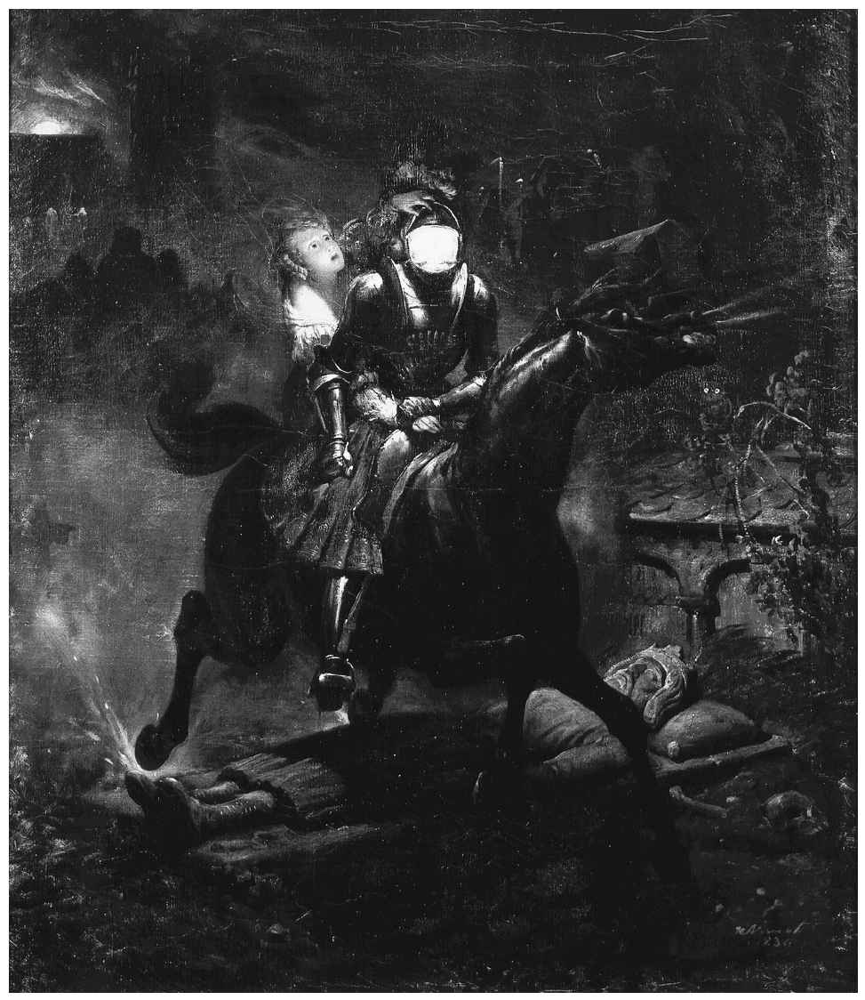
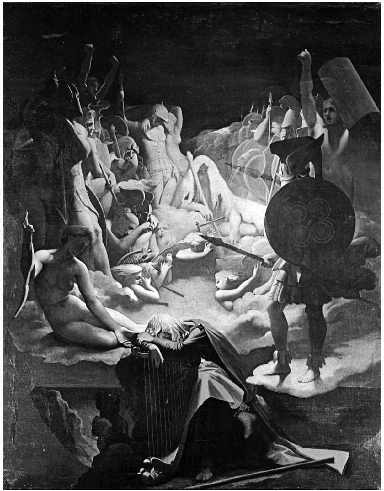

两个世纪以来，在探讨欧洲和北美文化史时，一切文学乃至一切艺术均被归并为两种模式，即“古典的”和“浪漫的”。这应归功于生活在耶拿的施莱格尔兄弟及其朋友，也应归功于斯塔尔夫人对德国作家所作的评论。当后世的人们在论战性的评论和文章中需要做出区分时，会经常重新审视卡莱尔1827年所谓的“极力主张的古典主义者和浪漫主义者之间的大论战”。例如，20世纪伊始，T.E.休姆和他的“意象派”圈子就摒弃了雨果和维多利亚时代晚期作家消沉、空洞的浪漫主义，他们之所以这样做就是为了主张干练、直白的“古典主义”风格。这两种模式之间的界限被不断地划定，再划定——甚至连施莱格尔兄弟也不停地修正两者的定义——许多人对这两个包罗万象的术语的用处持怀疑态度，但这种二分法经久不衰。烟雾之多似乎预示着某处一定存在着真正的火焰，其火种就是两种文化风格之间存在的本质差异。
当然，如果人们保持一定的距离并敢于大胆归纳，就不难看出这一差异。17、18世纪的欧洲文学精英们普遍认同下列规范：遵循希腊语和拉丁语作家，特别是拉丁语作家的写作形式和“规则”，以及他们创作中的清晰、专注和规范性；文学及一切艺术都应该是对生活的完美模仿，或者是“还原自然的产物”（亚历山大·蒲柏语），其目的在于通过净化悲怆的情感或嘲笑包括宗教“热情”在内的滑稽恶习来改善我们的品行；接受人类的局限性及秩序在艺术作品和社会中的必要性，尽管偶尔存有适度的期望，认为规范和理性可以扩大它们的领域。当启蒙运动将其近期在天文学、物理学、数学方面的成就，特别是艾萨克·牛顿爵士取得的成就，扩大至包括宗教、社会和心理学在内的所有领域时，人们发现这些文学规范与启蒙运动的许多观点不谋而合。
人们普遍认为，浪漫主义既反对古典主义又反对启蒙运动（我们想一想威廉·布莱克一方面谴责荷马和维吉尔，另一方面也抨击培根、牛顿和洛克）。然而，许多浪漫主义作家和艺术家非常崇尚古典文学、雕塑和哲学，并密切关注同时代的自然科学研究。将18世纪视为一体而浪漫主义仅仅是古典主义或启蒙运动的简单延续，这尤其是个错误。现今的学者使用另一术语“情感主义”（Sensibility）来指称与始于18世纪中叶的经典规范既相合又相悖的这一发展时期。“情感主义”指的并不是当今英语中“感受力”或“常情”的意思。它指的是敏感性或情感反应，类似于感伤主义，与被描绘为冷酷理性和无情才智的合理性与超然性截然相反。这之后，我们将其划分为三个历史时期，至少在英国如此：古典主义或新古典主义，有时也被称为奥古斯都时代（1660—1740年左右）；随后是情感主义（1740—1789年）；随后是浪漫主义（1789—1832年左右）。当然，这种划分过于简单，但只要我们牢记这些日期是主观设定的（基于政治事件），牢记这三种风格或模式长期并存达数十年之久，这种划分就不会造成太大的误解。同样的历史时期在欧洲大陆文学中也有迹可循，尽管各历史时期的起始年代有所不同。
文学史家一度将中间那个时期称为“前浪漫主义”，好像他们观察到的趋势不知出于何种缘由是不完整的，仍处于孕育或萌芽状态，静候时光和适宜的气候条件怒放，达到浪漫主义的绚烂时期。这一想法本身就足够“浪漫”，因为浪漫主义思想的一个典型隐喻是以有机体，尤其是植物，作为社会、历史和艺术品创作的模式。但我们应该明智地听从诺斯罗普·弗莱的告诫，不要把一个“不存在的目的论”强加给这一时期。因为“不仅‘前浪漫主义者’不知道浪漫主义运动会随之而来，很可能从未有过案例表明某位诗人认为后世诗人的作品实现了他自己的写作理想”。一些法国学者将法国的同一时期称为“第一浪漫主义”，但在我们为继其之后的运动探寻缘起时，还是称之为“情感主义”，像对待其他任何运动一样，把它看作是“完整的”。
同情、忧郁和恐惧
浪漫主义的最典型特征是重视情感，尤其是与理性相对、作为我们道德和社会生活基础的同感或同情。某些非常通情达理的哲学家，如沙夫茨伯里伯爵、大卫·休谟和亚当·斯密，认为情感比理性更有利于培养良好品格，引发正确行为。前者让我们不假思索地行动，后者则权衡各种后果或谨遵各种行为规范。沙夫茨伯里在《人、礼仪、言论与时代之特征》（1711）一书中宣称我们天生具有“道德感”，它会产生美感或旨趣这样的东西：
最终，我们的理智和我们的道德意识应达到和谐状态，而这样的和谐状态需要通过教化而非压抑我们的自然本能才能产生。他也严厉批评了道德自我中心论，这种中心论可见于比如托马斯·霍布斯的著作和基督教的行善教义——我们应该具有美德，因为这是上帝的要求，否则我们就要受到惩罚。我们的天性通常，但不总是，会引导我们做出一些无私行为，自然而然地表现得慷慨、友好和乐于助人。可以被称为浪漫主义先驱的让–雅克·卢梭认同良心之举在于感觉而不在于判断，我们对于他人的苦难会自然而然地产生同情。正如小托马斯·沃顿在《忧郁的快感》（1747）中所阐述的，“当兄弟遭遇灾难时，我狂跳的心融化在同情的泪水中”。在整个情感主义时代，无论是在文学作品还是现实生活中，无论是男性还是女性，充盈的泪水总会划过他们的脸颊。自发性本身是一种美德，可以在纯朴的乡村居民身上找到它，他们居住得比城市中产阶级和上流阶层更加接近自然；或者可以在古老的文本中找到它，它们记录了不同时代那些被城市和公寓大楼的人造物摧毁之前的文化。在这种精神的影响下，兴起了一股收集民间故事和民谣的潮流。显而易见，这促成托马斯·珀西编撰完成了《英诗辑古》（1765）。该诗集主要由叙事民谣组成，在英国和欧洲大陆均产生了深远影响。
情感，作为一种心理状态，也许只会通过同情怜悯的眼泪显露其身。所以，不足为奇的是，这个阶段的小说不再采用如笛福作品中跌宕起伏的插曲式情节，而是开始转向人的内心，此时的情节变得轻松缓慢，主要是为人物的沉思与对话提供机会。因此，书信体小说或者说书信小说成为新的文学主流。例如塞缪尔·理查逊的《帕米拉》（又名《贞洁得报》，1740—1741）和《克拉丽莎》（又名《一位年轻女士的生平》，1747—1748）获得了极大的成功。读者对小说中饱受苦难的女性主人公们产生了强烈的情感共鸣，并且长期沉湎于对她们思想和内心的私密审视中。理查逊启发卢梭写出了《朱莉或新爱洛伊丝：阿尔卑斯山麓小镇情书》（1761），该书在整个欧洲引起了更大的轰动。朱莉和其家庭教师圣普乐之间的这些信件，情感真挚强烈，心理刻画细致，并且恪守道德规范，吸引了广大读者，尤其是女性读者。歌德的《少年维特之烦恼》（1774）同时深受理查逊和卢梭的激励和鼓舞。该书是情感最为强烈（篇幅也最为简短）的书信体小说。它讲述了为人聪慧友善但情感过于自我放纵的少年维特爱上美丽且通情达理的绿蒂，但在相识时绿蒂已有婚约在身的故事。绿蒂对维特态度暧昧，纠结不定，但她没有背叛未婚夫。维特为绿蒂朗诵他翻译的莪相诗歌的场景令人撕心裂肺。读完诗之后，维特便回到自己的住所，开枪自杀。这本小说也引起很大的轰动，并且使得歌德成为日后“狂飙突进”（Sturm und Drang）运动的领军人物。该运动得名于弗里德里希·克林格1776年出版的同名剧本。该剧本充溢着不可抑制的情感，充满着对爱情、自由或复仇的悲剧性渴望。虽未经证实，但人们普遍相信，在德国及其他地区，发现数位年轻男子打扮成维特的模样，朝头部开枪自尽，倒在一册《少年维特之烦恼》上。
歌德的这部小说对年轻人应该起到了一定的警示作用，促使他们达到激情与理智或常识的和谐。这种和谐的培养曾是沙夫茨伯里道德理论的核心，在歌德随着年龄增长而迅速克服“狂飙突进”时期的情感主义习气、力求走向更为古典的平衡和优雅后，也成为其思想的核心。事实上，早在1778年，歌德已在其戏剧《情感主义的胜利》中讽刺自己“狂飙突进”时期的热情。十年间，歌德及其朋友弗里德里希·席勒一直在研究古希腊艺术，并为他们所认为的古希腊道德和美的集合体而孜孜不倦地努力着。在《优雅和尊严》（1793）一文中，席勒将“美丽的灵魂”（die schöne Seele）定义为“耽于声色又理性睿智，肩负责任又个性鲜明，一切都处于和谐中，而优雅就是这灵魂在外表上的表现”。拥有美丽灵魂需要培养或教化（Bildung），席勒在他具有影响力的作品《审美教育书简》（1795）中进一步阐述了这一过程。考虑到法国大革命导致的暴风骤雨，席勒认为，个体和国家只有克服了内部冲突，即调和了他们自身的“感性冲动”和“形式冲动”，才能自由生活，才能成为人人平等的共和国。这种调和就是文化的任务，是“游戏冲动”中的一种统一冲动，而“游戏冲动”是一种脱离了需求或义务的审美本能。因此，早期的德国浪漫主义者提出了这一思想，即艺术在个人和集体精神的成长中起着至关重要的作用。“美独自就能使整个世界幸福，每一个生命都会因为美的魅力而忘记自己的局限性。”
这是由情感主义文化或情感主义狂热引导的一个方向。另一迥然不同的路径则是对“忧郁”的培养和对“快感”的恣纵放任，一如沃顿的作品标题所宣称的。夜晚漫步走进树林、废墟或墓地，或者端坐在书房的台灯边思索人生的短暂与不幸——这些均已成为诗歌、小说及绘画的常见背景和主题。正如托马斯·格雷在当时最为著名的英文诗歌《墓地挽歌》（1751）中写道：“炫耀的门第，显赫的权势，/美和财富赋予的一切事物，/都同样等待着不可避免的时刻。/光辉的道路终将引导到坟墓。”不论他们的思想指向何方，忧郁的灵魂不会只是感到悲伤或沮丧，而是富于智慧，对脆弱的人类心怀仁慈，有时甚至会因冥想情绪唤起的宗教愿景而陷入“着迷”或“狂喜”的状态（“狂喜”一词用得越来越频繁）。

图3 歌德1844年版《少年维特之烦恼》中的插图。图中，痴狂的维特因对绿蒂无望的情爱而痛苦；绿蒂对他的爱是内敛的、柏拉图式的。蚀刻版画，托尼·若阿诺绘制
在观察者看来，早在大约1700年，一波严重的甚至是带有自杀性质的抑郁症就已经在整个英格兰蔓延，而且不仅仅是在作家或其他“天才”之间传播；在欧洲其他国家也发现了类似的流行病。18世纪初期，英语从法语中借用“厌倦”（ennui）一词来指代这种不安（malaise，另一法语单词）的一种形式；18世纪晚期，法国人从英语中借用“忧郁”（spleen）一词来指称相似的状态（19世纪中期，浪漫主义的继承者波德莱尔使用该词表达他对现代巴黎生活的厌恶之情）。无论是否真有这种流行病——我们没有可靠的统计数据——我们关心的是忧郁的一种更为温和的文学形式，这种文学形式被赋予打动人心的特权。詹姆斯·汤姆森探讨了“哲学忧郁之力量”的“神圣影响”（《秋》，1730），该术语几乎变得与“哲学”本身同义，与宗教自省同义。文学忧郁所具有的救赎和精神建构的特征，通过一代代浪漫主义者的很多词句保留了下来。例如，济慈的《忧郁颂》（1819）极力主张我们在“忧郁的情绪”下喝酒，而不是试图去抑制忧郁或分散自己的注意力，因为我们从中获得的不是理性的宁静，而是绝对的生命力。1802年，夏多布里昂的《基督教真谛》在法国掀起了另一波文学忧郁浪潮。在这部作品中，他描述了那个时代的颓唐不安：
献给忧郁或以忧郁为主题的诗歌在英国、德国和法国均很常见，其表达的心境从毫不犹疑的信奉到深深的绝望，正如柯勒律治著名的《沮丧颂》所表现的那样。
不出所料的是，对墓园的忧伤沉思有时也会引起某种不太达观的恐惧。爱德华·杨在长诗《哀怨，或关于生、死、永生的夜思》（1742）中便以九个漫漫长“夜” [5] 的沉思使许多读者毛骨悚然。杨告诉我们，人们过着自己的生活，生活中“磨人的苦恼盘桓，/哀伤震耳欲聋，盛怒满口毒牙、伺机而动，/不知餍足的灾祸攫住我们的命脉，/而凶险的命运则张开血盆大口，择人而噬”。仿佛犹嫌刺激不足，不久，小说家们更是添加了鬼魂及其他离奇可怖的事物，从而开创了被称作“哥特”小说的文学流派。哥特小说的开山之作是霍勒斯·沃波尔的《奥特朗托城堡：一个哥特式故事》（1764），其以令人屏息的节奏，伴随着动机不明的情节突转，为读者呈现了一个充满恐怖元素的故事，神秘谋杀、家族诅咒、乱伦、巨人和纯然之罪恶交织其中。这部作品之后，很快涌现出大量几乎同等恐怖的小说，较为突出的有马修·刘易斯的《修道士》（1796）；当然，最为成功的是年轻的玛丽·雪莱创作的《弗兰肯斯坦》（1818）。
托马斯·珀西收集的民谣《威廉甜美的灵魂》讲述了“你的真爱威利 [6] ”鬼魂站在玛格丽特的门前试图说服她坚守“信念和诺言”的故事。起初，玛格丽特似乎要断然拒绝威利，但随后还是让他进了房间。然后，她问威利，在他的头边、脚边抑或是身边是否有她的一席之地。他回答说没有，“但我的棺材正是为此而做的”。破晓时分，他消失不见，她恳求他留下。突然，她面色发白，双眼闭合，悄然逝去。这首民谣激发德国诗人戈特弗里德·奥古斯特·毕尔格创作了最富盛名也最具“哥特”风格的叙事谣曲《莱诺勒》（1774）。该诗的篇幅比珀西的民谣长很多：故事开始之初讲述了已经订婚的莱诺勒为她当兵的爱人未能归来而郁郁不乐，以至于她摒弃了基督教信仰带来的慰藉。此后，毕尔格以繁复的尾韵和头韵诗句描述了莱诺勒和她挚爱的威廉一同骑在黑马上，策马狂奔，穿过葬礼，穿过绞架，到达她的墓穴。该诗引起了巨大轰动。仅1796年一年就出现六种英文译本，其中包括沃尔特·司各特的。他后来曾说正是《莱诺勒》激励他成为了诗人。查尔斯·兰姆阅读了另一版本的译文后，写信给他的朋友柯勒律治：“你读了《月刊》第二期上刊登的民谣《莱诺勒》吗？你一定读过！！！！！！！！！！！！！！。”（此处共有14个惊叹号）此后一年内，柯勒律治写就了《古舟子咏》，他的合作者华兹华斯将其作为诗集的第一首诗，和数首超自然主题诗歌一起编入了《抒情歌谣集》。茹科夫斯基于1808—1831年期间先后用俄语翻译了三个版本的《莱诺勒》；普希金借鉴《莱诺勒》别具一格的诗节风格和神秘恐怖的主题，创作了《新郎》（1825）一诗，与《莱诺勒》不同的是，他构思了大团圆的结局。斯塔尔夫人在其评论德国文学的著作中对《莱诺勒》大加称赞，不久之后，法语版《莱诺勒》便问世了。维克多·雨果的叙事诗《鼓手的未婚妻》（1825）内容基于其开始的场景：未婚妻——从几节诗行中我们能够以一种隐秘的视角窥探到她满怀着希望与不安——最终没能从行军归来的队列中找到心上人的身影，于是倒地身亡。毕尔格的叙事谣曲《莱诺勒》几乎独自掀起了一股席卷欧洲的浪漫主义浪潮，与其说它促进了民谣的收集潮，不如说它激发了新民谣的创作热潮。德国人将这种新形式称为艺术叙事谣曲（Kunstballade）。同时，这首诗还引发了“策马疾驰”主题，最著名的就是歌德的诗歌《魔王》（1782）。
该诗包含父亲和生病的儿子之间的三段对话，父子一起骑马飞驰回家，魔王不断引诱男孩随他而去。该诗于1815年由舒伯特完美谱曲。
情感主义的兴起也使得风鸣琴或风弦琴成为异军突起的一时风尚。德国耶稣会会士阿塔纳修斯·基歇尔于1650年发明了该琴，并对其结构做出了描述。琴身为一长长的木质共鸣箱，两端的琴马上拉有若干根琴弦，当窗安置，借风力引起琴弦振动而发声。它可以调试出各种基音，但是就算各弦被调成同音，当风拂过时，依然会奏出一系列和音。到18世纪中叶，风鸣琴不仅出现在很多窗前，也常见于诗歌之中，例如詹姆斯·汤姆森的《风鸣琴》（1748）。诗中风鸣琴这一隐喻完美呈现了易受各种因素影响的敏感的灵魂，这一点尤其体现在竖琴与风和鸣、似呜犹咽的时刻。实际上，它似乎不仅仅是一个隐喻，因为当时许多哲学家和科学家都声称，包括大脑在内的神经系统是一个由振动的绳或弦组成的错综复杂的结构。诗人，正如每个国度的浪漫主义者宣称的那样，则是装了琴弦的精美乐器，回应着每一缕启发灵感的微风。

图4 奥拉斯·韦尔内，叙事谣曲《莱诺勒》（1839）。60多年来，毕尔格的这首恐怖叙事谣曲（1774）启发了很多绘画作品、音乐作品以及更多叙事谣曲的创作灵感。画中，莱诺勒的爱人带着她一同策马狂奔，奔向两人共同的坟墓
莪相崇拜
和我们之前提到的任何趋势和作品一样，詹姆斯·麦克弗森对古代诗人莪相创作的苏格兰高地盖尔语诗歌的收集与翻译（或许是他自称如此），对浪漫主义产生了同样深远的影响。这些作品现在已被世人遗忘殆尽，因此，我想在此作一详细叙述。最初一小部分莪相诗歌被译成散文，于1760年发表在爱丁堡《古诗拾零，搜集于苏格兰高地，译自苏格兰盖尔语》这本薄薄的册子中。公众对此反响很大，尤其是在苏格兰，以至于此后十年中每一两年均会有更多篇幅更长、更完整的诗歌出版。很快，莪相、芬戈尔、奥斯卡、塞尔玛、库丘林、奥塞娜这些人名对读者来说变得和阿喀琉斯、阿伽门农一样大名鼎鼎，莪相甚至被誉为“北方的荷马”。荒凉的苏格兰风景，更为阴冷的天气；往往具有神秘气息的事件，有时只是暗示着爱情悲剧和谋杀事件的发生；哀伤的心情，就如同莪相和其他吟游诗人吟诵昔日的伟大勇士和吟游诗人时的心情；昔日英雄超自然的降临和诸神的彻底缺失（这与荷马史诗截然不同）或对世间悲剧给出的些许抚慰——这一切都使得欧洲读者欣喜若狂。
更有影响力的是诗散文。下文节选自“诗歌之子”吟游诗人阿尔平致倒下的勇士莫拉尔的哀歌。
如果我们按照诗体将其重新排列，它看起来就会像这样：
在这种形式下，平行结构看得非常明显，诗中的一行或两行会在下一行中得到重申。最易懂的例子就是第一行和第二行。不是说“狭小”和“黑暗”是近义词，而是说它们与莫拉尔最近居住的宽敞明亮的大厅或城堡互为反义词。最复杂的形式是第三行至第九行，“三步”（本身是对“狭小”所作的进一步阐述）对“四石”，“树”对“草”。但另一方面，下文的“纪念物”（第六行）却和“坟墓”（第九行）相对应。更确切地说，“纪念物”暗指一个可以被他人看见的地方，因此，树和草向“猎人的眼睛”“标示”出坟墓的所在。当然，这只能是一位过路猎人，因为此地荒凉，且那些应该在墓前哀悼的人们也早已逝去。麦克弗森喜欢从诸如猎人或水手等其他人的视角对一个地方进行描述，描述的对象通常为坟墓。该手法后被很多人使用，尤其是英格兰的布莱克和意大利的乌戈·福斯科洛。上文节选文字摘自《塞尔玛之歌》，其最后一行写道：“黑暗的苔藓也在那儿鸣叫。远处的水手，将望见随风摇动的树枝。”
这景色极具异域风情，但是阅读诸如此类文字的读者们对此却非常熟悉。他们不仅熟知情感主义，而且熟谙《圣经》。前者引发“爱情之泪”，那些并不是少女洒下的爱情之泪；后者行文重复，却又富于变化。随意翻开《旧约·诗篇》，你很可能找到莪相式的对句：“我的民哪，你们要留心听我的训诲，侧耳听我口中的话。我要开口说比喻，我要说出古时的谜语。”（78：1–2）1753年，罗伯特·洛思出版一书，书中用“平行体句式”来描述《旧约》希伯来语诗句的结构。该书享有盛名，麦克弗森肯定对此也非常熟悉，不过麦克弗森是读着国王詹姆斯一世的钦定《圣经》长大的，可能并不需要它。
盖尔人奇异又“古老”的世界与情感主义的氛围及《旧约》韵律的结合让人无法抗拒。然而，这一结合过于美好、奇妙而令人难以置信。从一开始，就有人对此表示怀疑，认为麦克弗森不可能根据他的笔记创作出大多数的盖尔语源语文本。最著名的早期怀疑论者是塞缪尔·约翰逊，他声称这些诗歌“带给全世界未曾有过的麻烦”。一代人过去了，华兹华斯于1815年将麦克弗森称为“莪相陛下”以示嘲弄，并写道：
今天，人们一致认为，麦克弗森确实听过一些盖尔语诗歌，并将其中的部分人物和事件运用到他的“译作”中。然而，其中大多数是在其“歌集是古代传说的片断”观点的指引下创作而成的。尽管广受质疑，包括很多浪漫主义诗人在内的许多读者仍对莪相的真实存在深信不疑，即便是在知道真相后，他们仍对麦克弗森的作品持欣赏态度。
在德国，弗里德里希·戈特洛布·克洛卜施托克的诗歌标志着对新古典主义规范的决定性突破，预示着浪漫主义主流模式的来临。他于1767年写道：“莪相的作品是真正的杰作，倘若我们［德意志人］能有这样一位吟游诗人该多好啊！”然而，他又认为莪相实际上就是德意志人，因为他把古代凯尔特人（爱尔兰和苏格兰的盖尔人）与古代日耳曼人视为同一种族。而且，他和他的诗人圈子自诩为“吟游诗人”。毕尔格翻译了部分莪相诗歌。歌德将很多页的莪相作品翻译成诗歌和散文；他在写作《少年维特之烦恼》的时候，已经意识到莪相作品的缺陷，但是，还是翻译了《塞尔玛之歌》，让维特在他与绿蒂的命定之夜朗诵给她听。该诗歌标志着维特已陷入一种无可救药的迷恋和自我忧郁中，这让他将阳光普照的荷马抛在一边而拾起了朦胧的莪相。诗人弗里德里希·荷尔德林1787年在给朋友的一封信中写道：
卡罗利妮·冯·冈德罗德1804年出版的诗集《诗和幻想》的第一首诗就是译诗《译自莪相的达苏拉》。
在英国，尽管华兹华斯摈弃了莪相诗歌，布莱克还是根据莪相诗歌中的篝火场景创作了一首诗歌，宣称他相信莪相的真实存在。柯勒律治和拜伦分别将莪相诗集中的几首诗歌改写成韵文。而在法国，作曲家让—弗朗索瓦·勒叙厄尔上演了一部名为《莪相：吟游诗人》（1804）的五幕歌剧，当然，此歌剧的管弦乐队为此特意增加了12架竖琴进行伴奏。欧洲大陆的主要城市中，越来越多的吟唱式歌剧竞相登场亮相。拉马丁年轻时就非常痴迷于莪相，而他1820年发表的诗集 [7] 被视为发起了（或是重新发起了）法国的浪漫主义。回首那段岁月，他写道：

图5 让·奥古斯特·多米尼克·安格尔，《莪相之梦》（1813）。这幅油画受拿破仑委托完成。拿破仑非常欣赏莪相的诗歌，打仗时也随身携带一册。画中，莪相诗歌中的人物就像是大理石或雪花石膏雕像
弗朗索瓦·热拉尔、阿内–路易·吉罗代·德·路希–特里奥松和让·奥古斯特·多米尼克·安格尔创作了大量的莪相风格油画。俄罗斯人认可凯尔特人和德意志人同属一个种族的观点，因此凭借他们斯堪的纳维亚的祖先（俄罗斯人），他们认为自己就是莪相的后代。因此，出现了许多莪相诗歌译文和更多的吟游诗歌。普希金《叶甫盖尼·奥涅金》中的诗人连斯基喜欢朗诵“北欧诗歌的片段”。有部分苏格兰血统的莱蒙托夫曾在《莪相墓地》（1830）中称颂他与莪相的亲缘关系。莪相这个名字传至欧洲各地，甚至传到了美国。在美国，至今仍有两个名叫莪相的城镇，一个在印第安纳州（人口为3 000），一个在艾奥瓦州（人口为830）。莪相的诗作风格和当代审美相去甚远，因此，除了当地的图书馆馆员外，还会有谁读过麦克弗森的吟游诗人莪相的这些诗歌，这令人生疑。但是除非我们学会欣赏卡莱尔所称的“麦克弗森的无病呻吟”，否则我们就理解不了浪漫主义运动，尤其是对灵感诗人莪相的崇拜。
旧的观念认为，就情感或内心直觉而言，浪漫主义是对启蒙运动理性主义的反抗，不过我们现在很清楚，由于情感主义运动的介入，这样的理解过于简单并容易引起误解。事实上，这种对浪漫主义的阐述更适合于情感主义，或者至少适合于情感主义的部分发展趋势。最近刚提出的新观点更为有趣，它认为浪漫主义是范围更广的情感运动中的一段小插曲。当然，这有一定的道理。华兹华斯的著名论断“强烈情感的自然流溢”，相比于定义诗歌，似乎更好地诠释了个人伤感情绪的流露。他在《抒情歌谣集》中对流浪者、寡妇、丧亲老翁的描写刻画似乎旨在唤醒我们的怜悯和同情。布莱克《天真之歌》中受难孩童们肆意流泪的画面也是如此。法国、德国和俄国的众多浪漫主义诗歌都表达了世界的痛楚和诗人的悲苦境遇。风鸣琴依旧在颤动，而莪相式云彩继续在文学的天空聚集。
但是，浪漫主义者也反对对情感主义的崇拜。一些人对风鸣琴模式感到不安，该模式意味着在外部经验面前灵魂是被动且无助的，或者至多只能激励我们将经历转化为内在的和谐。还有比这更加利害攸关的。柯勒律治曾在1796年写道：“情感主义不是仁善。不仅如此，它还让我们为微不足道的不幸之事战战兢兢，以不断阻止仁善的产生并引发柔弱怯懦的自私。”欧洲几乎所有主要的浪漫主义作家起初都是社会改革者或是政治改革者；事实上，他们均受到法国大革命初始阶段的启发；用柯勒律治的话来说，他们通过对政府、宗教和教育的革新寻求有效的仁善之道。他们深知情感的共鸣只不过是一个人致力于社会改革道路上的一个瞬间。这并不意味着浪漫主义者总是变革的有效力量——远非如此——但是他们至少在比自己内心范围更大的领域内进行了思考并采取了行动。这一点在早前的运动中并没有做到。第一代德国浪漫主义者继承了沙夫茨伯里和席勒的教化（Bildung）这一观念，拒绝仅仅将心灵作为检验的唯一标准，认为理智与情感应该融为一体。他们认为，能将理智与情感融为一体的是艺术，尤其是诗歌，也包括视觉艺术和音乐。与此同时，他们将这种教养视为一种国家性甚至是国际性工程，应在“把共同体当作一个有机整体、一件艺术品”这一理想的指导下进行。